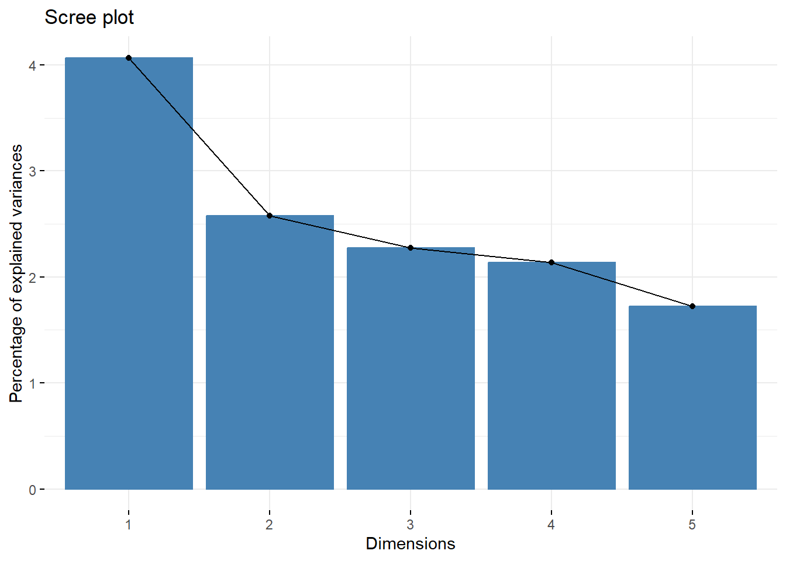
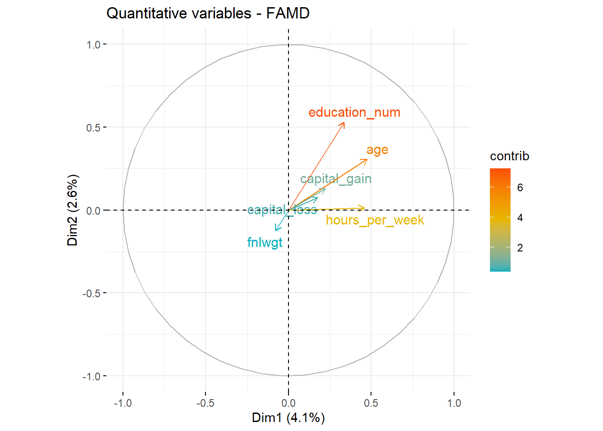

# Clearing the workspace
rm(list = ls())
# Loading necessary libraries
library(FactoMineR)
library(factoextra)
library(dplyr)
library(ggplot2)FAMD Notebook
Introduction
This project focuses on applying Factorial Analysis of Mixed Data (FAMD) to the “adult” dataset from the UCI Machine Learning Repository. FAMD is a dimension reduction technique that allows for the simultaneous analysis of both quantitative and qualitative variables. The goal is to understand the relationships between variables and individuals by reducing the dataset’s dimensionality while preserving as much of the variance as possible.
FAMD (Factor Analysis of Mixed Data) is a dimensionality reduction technique designed for datasets with both quantitative and qualitative variables. It combines elements of PCA (for quantitative variables) and MCA (for qualitative variables) to capture and preserve the information structure from both types in a lower-dimensional space.
The dataset used in this analysis is the “adult” dataset from the UCI Machine Learning Repository (dataset).
Dataset
We will use the “adult” dataset from the UCI (University of California, Irvine) archive, which is commonly used in machine learning and statistics. This dataset is often applied in tasks such as income classification or prediction.
# Defining column names
column_names <- c(
"age", "workclass", "fnlwgt", "education", "education_num", "marital_status",
"occupation", "relationship", "race", "sex", "capital_gain", "capital_loss",
"hours_per_week", "native_country", "income"
)
# Loading the dataset
url <- "https://archive.ics.uci.edu/ml/machine-learning-databases/adult/adult.data"
data_adult <- read.table(url, header = FALSE, sep = ",", col.names = column_names)
# Creating a subset of the dataset
df <- data_adult[, 1:15]
head(df) age workclass fnlwgt education education_num marital_status
1 39 State-gov 77516 Bachelors 13 Never-married
2 50 Self-emp-not-inc 83311 Bachelors 13 Married-civ-spouse
3 38 Private 215646 HS-grad 9 Divorced
4 53 Private 234721 11th 7 Married-civ-spouse
5 28 Private 338409 Bachelors 13 Married-civ-spouse
6 37 Private 284582 Masters 14 Married-civ-spouse
occupation relationship race sex capital_gain capital_loss
1 Adm-clerical Not-in-family White Male 2174 0
2 Exec-managerial Husband White Male 0 0
3 Handlers-cleaners Not-in-family White Male 0 0
4 Handlers-cleaners Husband Black Male 0 0
5 Prof-specialty Wife Black Female 0 0
6 Exec-managerial Wife White Female 0 0
hours_per_week native_country income
1 40 United-States <=50K
2 13 United-States <=50K
3 40 United-States <=50K
4 40 United-States <=50K
5 40 Cuba <=50K
6 40 United-States <=50KData Description
This dataset contains demographic and occupational information on 30,162 individuals, divided into 14 variables such as age, work class, education level, marital status, occupation, and hours worked per week. Economic variables like capital gain/loss and country of origin are also included.
Data Preprocessing
# Removing the redundant "education" variable, which is already encoded as "education_num"
df <- df %>% select(-education)
# Converting categorical variables to factors
df$workclass <- as.factor(df$workclass)
df$marital_status <- as.factor(df$marital_status)
df$occupation <- as.factor(df$occupation)
df$relationship <- as.factor(df$relationship)
df$race <- as.factor(df$race)
df$sex <- factor(df$sex)
df$native_country <- as.factor(df$native_country)
df$income <- factor(df$income)
# Removing rows with "?" values in specific variables
df <- df[!(grepl("\\?", df$workclass) | grepl("\\?", df$native_country) | grepl("\\?", df$occupation)), ]
# Displaying the cleaned data
head(df) age workclass fnlwgt education_num marital_status
1 39 State-gov 77516 13 Never-married
2 50 Self-emp-not-inc 83311 13 Married-civ-spouse
3 38 Private 215646 9 Divorced
4 53 Private 234721 7 Married-civ-spouse
5 28 Private 338409 13 Married-civ-spouse
6 37 Private 284582 14 Married-civ-spouse
occupation relationship race sex capital_gain capital_loss
1 Adm-clerical Not-in-family White Male 2174 0
2 Exec-managerial Husband White Male 0 0
3 Handlers-cleaners Not-in-family White Male 0 0
4 Handlers-cleaners Husband Black Male 0 0
5 Prof-specialty Wife Black Female 0 0
6 Exec-managerial Wife White Female 0 0
hours_per_week native_country income
1 40 United-States <=50K
2 13 United-States <=50K
3 40 United-States <=50K
4 40 United-States <=50K
5 40 Cuba <=50K
6 40 United-States <=50Ksummary(df) age workclass fnlwgt education_num
Min. :17.00 Private :22286 Min. : 13769 Min. : 1.00
1st Qu.:28.00 Self-emp-not-inc: 2499 1st Qu.: 117627 1st Qu.: 9.00
Median :37.00 Local-gov : 2067 Median : 178425 Median :10.00
Mean :38.44 State-gov : 1279 Mean : 189794 Mean :10.12
3rd Qu.:47.00 Self-emp-inc : 1074 3rd Qu.: 237629 3rd Qu.:13.00
Max. :90.00 Federal-gov : 943 Max. :1484705 Max. :16.00
(Other) : 14
marital_status occupation relationship
Divorced : 4214 Prof-specialty :4038 Husband :12463
Married-AF-spouse : 21 Craft-repair :4030 Not-in-family : 7726
Married-civ-spouse :14065 Exec-managerial:3992 Other-relative: 889
Married-spouse-absent: 370 Adm-clerical :3721 Own-child : 4466
Never-married : 9726 Sales :3584 Unmarried : 3212
Separated : 939 Other-service :3212 Wife : 1406
Widowed : 827 (Other) :7585
race sex capital_gain capital_loss
Amer-Indian-Eskimo: 286 Female: 9782 Min. : 0 Min. : 0.00
Asian-Pac-Islander: 895 Male :20380 1st Qu.: 0 1st Qu.: 0.00
Black : 2817 Median : 0 Median : 0.00
Other : 231 Mean : 1092 Mean : 88.37
White :25933 3rd Qu.: 0 3rd Qu.: 0.00
Max. :99999 Max. :4356.00
hours_per_week native_country income
Min. : 1.00 United-States:27504 <=50K:22654
1st Qu.:40.00 Mexico : 610 >50K : 7508
Median :40.00 Philippines : 188
Mean :40.93 Germany : 128
3rd Qu.:45.00 Puerto-Rico : 109
Max. :99.00 Canada : 107
(Other) : 1516 In the cleaned dataset, we have:
8 categorical variables (
workclass,marital_status,occupation,relationship,race,sex,native_country,income)6 quantitative variables (
age,fnlwgt,education_num,capital_gain,capital_loss,hours_per_week).
FAMD Analysis
FAMD is designed for datasets with both quantitative and qualitative variables. This method helps capture the structure of information from both types in a reduced-dimensional space.
# Performing FAMD
res.famd <- FAMD(df, graph = FALSE)
print(res.famd)*The results are available in the following objects:
name description
1 "$eig" "eigenvalues and inertia"
2 "$var" "Results for the variables"
3 "$ind" "results for the individuals"
4 "$quali.var" "Results for the qualitative variables"
5 "$quanti.var" "Results for the quantitative variables"Eigenvalues and Scree Plot
The eigenvalues explain the variance captured by each dimension. We visualize these with a Scree plot.
get_eigenvalue(res.famd) eigenvalue variance.percent cumulative.variance.percent
Dim.1 3.335494 4.067675 4.067675
Dim.2 2.111631 2.575160 6.642835
Dim.3 1.865438 2.274924 8.917759
Dim.4 1.750812 2.135137 11.052896
Dim.5 1.414247 1.724691 12.777587fviz_screeplot(res.famd)
Results of Quantitative Variables
We now examine the results for quantitative and qualitative variables.
# Extracting variable results
var <- get_famd_var(res.famd)
head(var$coord) Dim.1 Dim.2 Dim.3 Dim.4 Dim.5
age 0.223886097 0.0941971704 0.167941430 1.136944e-01 0.002974916
fnlwgt 0.006194664 0.0154156637 0.001782508 5.011045e-04 0.050546963
education_num 0.113861003 0.2810037945 0.117591135 1.417511e-01 0.003836735
capital_gain 0.049352758 0.0166217398 0.003492524 5.793895e-03 0.001104990
capital_loss 0.030683301 0.0054237250 0.001523813 2.205932e-03 0.001098770
hours_per_week 0.209164374 0.0001478409 0.004458374 3.221007e-05 0.069563001head(var$cos2) Dim.1 Dim.2 Dim.3 Dim.4 Dim.5
age 5.012498e-02 8.873107e-03 2.820432e-02 1.292642e-02 8.850124e-06
fnlwgt 3.837386e-05 2.376427e-04 3.177335e-06 2.511057e-07 2.554995e-03
education_num 1.296433e-02 7.896313e-02 1.382768e-02 2.009339e-02 1.472053e-05
capital_gain 2.435695e-03 2.762822e-04 1.219773e-05 3.356922e-05 1.221003e-06
capital_loss 9.414650e-04 2.941679e-05 2.322006e-06 4.866136e-06 1.207295e-06
hours_per_week 4.374974e-02 2.185692e-08 1.987710e-05 1.037489e-09 4.839011e-03Plotting Quantitative and Qualitative Variables
# Plotting quantitative variables
fviz_famd_var(res.famd, "quanti", repel = TRUE, col.var = "black")# Plotting qualitative variables
fviz_famd_var(res.famd, "quali", repel = TRUE, col.var = "red")Interpretation of Quantitative Variables
The plot illustrates the orientation of each numerical variable in the first two dimensions. Variables like education_num and age contribute primarily to Dimension 1, while others, such as fnlwgt, have distinct orientations, indicating unique contributions. The proximity between capital_gain and capital_loss suggests a potential relationship.
Interpretation of Qualitative Variables
For categorical variables, the plot shows the distribution of category levels across dimensions. Categories closer together share similar profiles. For example, Male and Husband are close, indicating an association. The >50K income category is near certain professions, suggesting higher income in these roles.
Contribution Analysis
# Contributions of quantitative variables
head(var$contrib) Dim.1 Dim.2 Dim.3 Dim.4 Dim.5
age 6.7122329 4.460872745 9.00278941 6.493808495 0.21035336
fnlwgt 0.1857195 0.730035878 0.09555441 0.028621258 3.57412590
education_num 3.4136178 13.307429116 6.30367520 8.096307579 0.27129172
capital_gain 1.4796238 0.787151734 0.18722278 0.330926136 0.07813276
capital_loss 0.9199029 0.256850041 0.08168662 0.125994773 0.07769293
hours_per_week 6.2708673 0.007001264 0.23899883 0.001839722 4.91873119# Plotting contributions with colors indicating contribution level
fviz_famd_var(res.famd, "quanti", col.var = "contrib", gradient.cols = c("#00AFBB", "#E7B800", "#FC4E07"), repel = TRUE)
fviz_famd_var(res.famd, "quali", col.var = "contrib", gradient.cols = c("#00AFBB", "#E7B800", "#FC4E07"))Contributions to Dimensions 1 and 2
# Contributions of variables to Dimension 1
fviz_contrib(res.famd, "var", axes = 1)# Contributions of variables to Dimension 2
fviz_contrib(res.famd, "var", axes = 2)Based on the plots:
The variables contributing most to Dimension 1 are
relationship,marital_status, andincome.The variables contributing most to Dimension 2 are
occupation,relationship, andsex.
Position of All Variables
The following plot shows the positions of both quantitative and qualitative variables in the two dimensions.
fviz_famd_var(res.famd, repel = TRUE)This plot indicates that variables such as occupation, relationship, and marital_status are significant in Dimension 2, while income and hours_per_week align more with Dimension 1.
Individual Coordinates
The coordinates of individuals projected into the factorial space after FAMD.
ind <- get_famd_ind(res.famd)
head(ind$coord) Dim.1 Dim.2 Dim.3 Dim.4 Dim.5
1 -0.8212916 1.37538566 0.808106131 -1.386838667 -0.8099568
2 1.7013425 0.03747854 -0.226568460 -0.002206992 -0.6329447
3 -1.0678277 -0.52645477 -0.656417530 -0.178271589 -1.4937661
4 0.2164024 -1.75424797 -0.886147716 0.794656422 1.2237246
5 -0.3746291 2.00955681 0.002205068 -0.039650809 4.0516776
6 0.3950721 1.72345240 0.276142107 -0.540332865 2.3084184Conclusion
This FAMD analysis reveals insights into the relationships between demographic and economic variables in the dataset. Key findings include associations between demographic factors and income categories, as well as notable relationships between certain categorical variables.